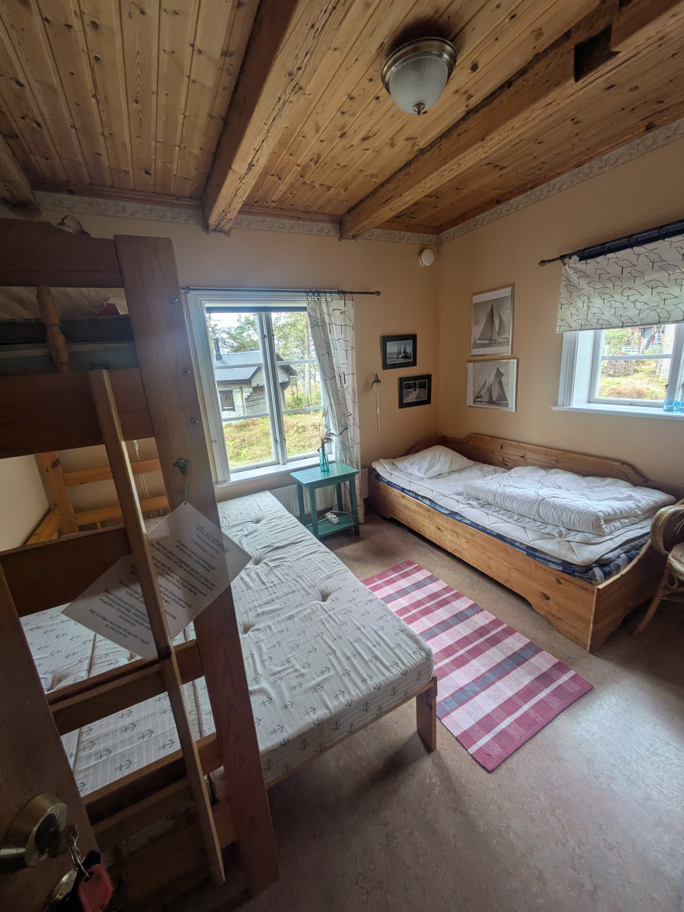

En sötvattens skärgårdsdröm, Lurö är en juvel på Värnern likt ingen annan. Här på härbärget??? skall ni bo under denna fantastiska fest
På Lurön kommer ni tilldelas sovplatser antingen i ett av husen eller stugorna. I Fyrhuset och Sjöboden finns det plats för 23 och 8 i respektive hus, i fyra stugor finns det plats för 6 i varje och i ENSAMHETEN som är den största och vackraste stugan skall Oskar och Clara självklart bo. Vi väljer även med omsorg hur ni fördelas på sängplatserna. Ni betalar självfallet ingeting för boende. Boenden är utrustade med det mesta ni kan tänkas behöva under er visit, men toaletter och duschar finns på ön.

Maten förbereds av den fantastiska kocken Håkan som även är en av ägaran av platsen, ni kommer serveras frukost, luncher och middagar med alla möjliga tilltugg där imellan. Vi prioriterar vegetarisk mat, gillar ni inte det kan ni stanna hemma. Kött kommer erbjudas för grillning och bakis-buffé. Dryck kommer serveras med måtta.